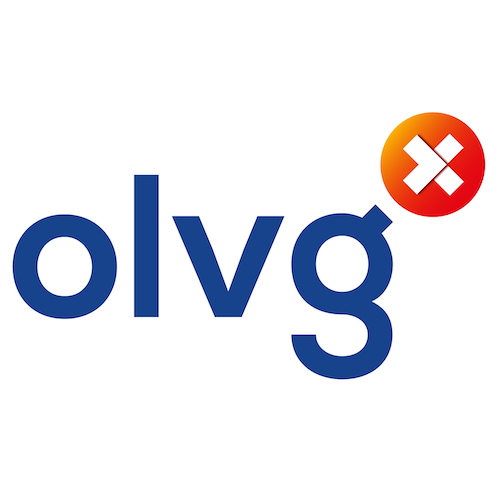
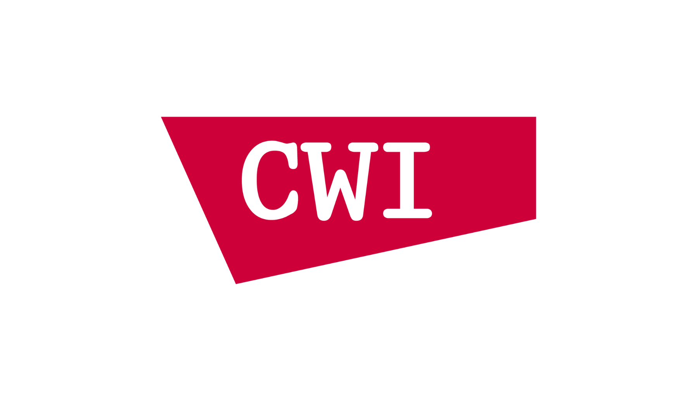

Intensive care data, free for research.
AmsterdamUMCdb is the first freely accessible European intensive care database. Its forthcoming Van Gogh version brings together the de-identified records of about 65,000 patients from both locations of Amsterdam UMC. Researchers anywhere can request access, and one request covers every version.
Amsterdam has long been a city where knowledge travels freely. In the seventeenth century its printers published books that could not appear elsewhere in Europe. We share intensive care data in that tradition: openly, and with the privacy of patients protected.
The database
AmsterdamUMCdb holds de-identified health records of adult patients admitted to the intensive care and high-dependency units of Amsterdam UMC: demographics, vital signs, laboratory tests, medication and more. It is the first intensive care database in the European Union that is freely accessible for research.
Van Gogh, the forthcoming version In preparation
Van Gogh is the next version of AmsterdamUMCdb. It brings together the intensive care data of both locations of Amsterdam UMC, from 2002 through 2023, in the OMOP Common Data Model.
- adult patients
- ~65,000
- admissions to intensive care and high-dependency
- ~74,000
- years of care
- 2002–2023
- million records
- ~500
These figures are provisional. The final ones follow when Van Gogh is released.
- Two locations instead of one. Location AMC and location VUmc, with about three times as many patients as before.
- Seven more years of care. 2002–2023, where the earlier versions end in 2016.
- Standard vocabularies throughout. Diagnoses and procedures in SNOMED, laboratory tests in LOINC and medication in RxNorm.
- No second request. Your approval covers Van Gogh from the day it is released.
Earlier versions: Rembrandt
The versions released so far are now called Rembrandt. They hold 23,106 admissions of 20,109 patients at location AMC, 2003–2016, including nearly 5 million medication records. Both stay available.
-
Rembrandt OMOPalso known as 1.5.0
Released in May 2024, in the OMOP Common Data Model 5.4 for standardised and reproducible analysis.
Available -
Rembrandtalso known as 1.0.2
Released in March 2020, in the original table structure.
Available
- Access
- One approved request gives access to every version. You do not apply per version.
- Available from
- DANS Data Station Life Sciences, after approval
Amsterdam UMC made AmsterdamUMCdb together with the Dutch Society for Intensive Care Medicine (NVIC) and its research network RCCnet. It is part of the data sharing initiative of the European Society of Intensive Care Medicine (ESICM), which promotes responsible sharing of intensive care data across Europe. The aim is that algorithms developed on such data reach the bedside and improve care for future critically ill patients.
The description of every table, example code and a notebook to get started with the Rembrandt versions are on GitHub. The documentation of Van Gogh follows at its release.
How to cite
Thoral PJ, Peppink JM, Driessen RH, et al. Sharing ICU Patient Data Responsibly Under the Society of Critical Care Medicine/European Society of Intensive Care Medicine Joint Data Science Collaboration: The Amsterdam University Medical Centers Database (AmsterdamUMCdb) Example. Crit Care Med 2021;49(6):e563–e577. doi:10.1097/CCM.0000000000004916
Press release
Amsterdam UMC, ESICM and NVIC announced AmsterdamUMCdb together on 17 November 2019.
Request access
The records are de-identified, but they still describe the care of real patients in detail. Access is therefore personal and bound to an End User License, which you and an intensivist reference both accept in the access portal. One request covers every version: Van Gogh from the day it is released, and the Rembrandt versions today.
What you need
- An institutional email address. The one your university or hospital issued. Addresses at gmail.com, outlook.com, qq.com, 163.com and other free providers are not accepted.
- The CITI course. Data or Specimens Only Research (DSOR), completed with that same address. Other courses are not accepted. It is the course that MIMIC and eICU ask for as well; PhysioNet explains how to register, and registering as an independent learner costs money.
- A reference who is a practicing intensivist. A physician who treats patients in an intensive care unit today, and who is willing to support you with clinical expertise. A computer scientist, data scientist, statistician or research supervisor cannot be your reference.
How it goes
- Enter your institutional address in the access portal and open the link we send you.
- Fill in who you are and what you plan to do, the verify link of your CITI completion report, and who your reference is.
- Accept the terms of the End User License. Your reference then accepts the same terms from their own mailbox.
- The administrators check your training and your reference, normally within five business days.
- You and your reference receive the agreement as a PDF.
- Create an account at DANS Data Station Life Sciences with the same address and request the files of the version you need there.
The license covers lawful, non-commercial scientific research. Do you have another lawful use in mind? Write to access@amsterdammedicaldatascience.nl.
Privacy, ethics and support
Amsterdam UMC complies with European and Dutch law, including the General Data Protection Regulation (GDPR). Three things were done before the Rembrandt versions were shared.
- A Data Privacy Impact Analysis was carried out.
- Independent experts, led by Prof. Sijbrands of Erasmus MC and the Netherlands Federation of University Medical Centers (NFU), assessed the risk of re-identification. They concluded that, taking into account all means reasonably likely to be used, re-identification is not reasonably likely, so that the database can be regarded as anonymous information under the GDPR.
- Dr. Erwin Kompanje, a clinical ethicist and an expert in the ethics of intensive care, reviewed the project independently. He concluded that using de-identified medical data in this way is ethically sound, given the minimal risk and the principles of duty of easy rescue and charitable contribution, and that the benefits of responsible data sharing outweigh the possible drawbacks.
Van Gogh goes through the same steps before it is released: a new impact analysis, a new assessment of the risk of re-identification, and an independent ethical review.
Support in the Netherlands
The NVIC and its research network RCCnet strongly support the ESICM initiative. UMC Utrecht, Maastricht UMC+, Radboudumc, OLVG and Erasmus MC have publicly stated their intention to share data of their own intensive care patients.
Patients
The Dutch patient organisation IC Connect and the foundation Family and Patient Centered Intensive Care (FCIC) endorse AmsterdamUMCdb and responsible data sharing for future patients, given the privacy safeguards in place.
Data and Pizza
The meetup where doctors meet data scientists, and the other way round. The subjects cover the whole of medical data science, and more than 2,200 people have joined. Come along if you like data, pizza or both.
Amsterdam Medical Data Science
Connecting healthcare and data science.
Medical data is abundant, and it could improve care for future patients. Using it well is hard. There are technical, administrative, legal and organisational obstacles. Above all, doctors and data scientists often understand each other poorly, or not at all.
Amsterdam Medical Data Science wants to change that. We connect healthcare professionals and data scientists in the Amsterdam area, organise the Data and Pizza meetups, and host AmsterdamUMCdb.
-
 Paul Elbers, MD, PhD, EDICIntensivist, Amsterdam UMC
Paul Elbers, MD, PhD, EDICIntensivist, Amsterdam UMC -
Mark Hoogendoorn, PhDProfessor of Artificial Intelligence, Vrije Universiteit Amsterdam
-
 Patrick Thoral, MDIntensivist, OLVG, AmsterdamCo-founder of AmsterdamUMCdbLinkedIn
Patrick Thoral, MDIntensivist, OLVG, AmsterdamCo-founder of AmsterdamUMCdbLinkedIn
The lab behind it
AmsterdamUMCdb is built and shared by the Center for Critical Care Computational Intelligence (C4I), the research group for data science and artificial intelligence at the Department of Intensive Care Medicine of Amsterdam UMC. Read about the center and its research.
Partners
Amsterdam Medical Data Science is funded by Amsterdam UMC, Vrije Universiteit Amsterdam and Amsterdam Economic Board. It is supported by the Right Data Right Now consortium.


Acknowledgements
We thank the founders of AmsterdamUMCdb, Paul Elbers and Patrick Thoral, and all intensive care professionals of the Department of Intensive Care Medicine, led by Prof. dr. Armand Girbes and Hans van der Spoel. We thank the clinical IT specialists Jan Peppink, Ronald Driessen and Dagmar Ouweneel for their essential contributions. We are grateful to PhysioNet for creating the MIMIC and eICU databases, which were a major source of inspiration.
Dutch Data Warehouse against COVID-19
During the pandemic, intensive care units across the Netherlands combined their records of COVID-19 patients in one warehouse, coordinated by Amsterdam UMC and supported by the Dutch Society for Intensive Care Medicine and Pacmed. More than 60 units took part. Thirty-five of them shared more than 400 million data points from more than 1,500 critically ill patients.
The warehouse is open to collaboration, within privacy law, regulations and ethical considerations. Write to ddw@amsterdammedicaldatascience.nl.